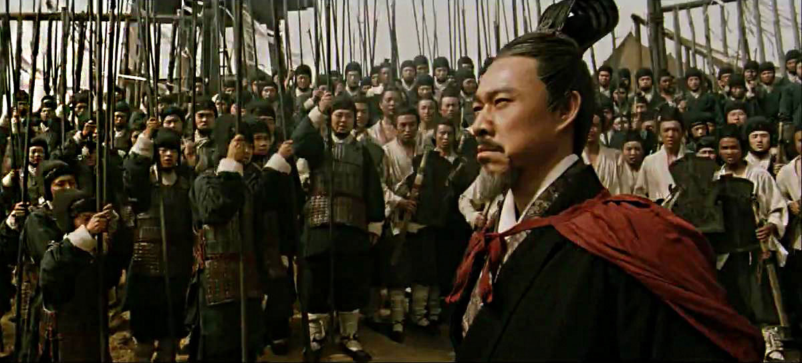

서기 208년

서기 200년, 조조는 원소를 꺾고 화북에 대한 패권을 확립한다. 승상에 오른 그는 찬하통일을 완수하기 위해
208년 여름 본격적으로 남진을 개시했다. 죽은 유표의 뒤를 이은 형주자사 유종은 막강한 조조군에게 그대로
항복해버린다. 신야성의 유비는 손권이 있는 강동으로 향했으나 같이 따르던 백성들의 속도가 느려 추격해오던
조조군의 기병에게 크게 패하고 결국 하구에 주둔하는 유기에게로 피신했다. 손권은 유기와의 적대 행위를
중지하고 주유의 의견을 받아들여 유비, 유기와 연합해 조조에게 맞서 싸우기로 결정한다.
유종의 항복과 유비의 피신 이후 형주를 장악한 조조는 강릉에 주둔하며 수군이 채비를 갖추길 기다렸다. 조조군의 대다수가 물에서의 싸움에 익숙하지 않았으므로 항복한 형주 수군과 함께 훈련을 시키는 한편 함선을 건조하도록 하였다. 하지만 조조군은 익숙하지 못한 기후와 환경에서 적응하지 못하고 역병까지 도는 문제가 터졌고, 강에서는 손권군이 우세하다는 것이 판명되었으므로 우위를 점할 때까지는 양자강 북안에 포진한 채 공격할 때를 기다렸다. 손권은 주유를 도독, 정보를 부도독으로 임명해 군의 지휘를 일임하고, 자신은 시상에 주둔했다. 주유는 함대를 이끌고 하구를 지나 조조의 수군을 마주보는 형태로 장강 남안에 포진했다. 주유도 조조의 대함대를 단번에 격파할 만한 기회를 노리고 있어서 서로 대규모 충돌은 일어나지 않은 채 시간이 지나가고 어느덧 겨울이 되었다.

208년 겨울, 조조군과 대치하고 있는 상황에서 조조군의 배가 서로 길게 이어져 있는 것을 본 주유와 황개는
화공으로 조조군을 공격할 계획을 세운다. 주유는 배 수십 척에 마른 풀을 가득 싣고 그 위에 기름을 부으게 하였고 황개는 조조에게 투항한다는 편지를 보냈다. 어두운 밤 황개는 불 지를 배들을 이끌고 조조군 진영을 향해 나아갔다. 황개에게 속아 넘어간 조조는 황개가 탄 배를 보고 아무런 의심도 하지 못했다. 배가 가까이 붙고 황개가 배에다 불을 지르자 당시 바람이 매우 사나웠으므로 강가의 진영에까지 불길이 번졌다. 조조군은 큰 피해를 입었고 이에
조조는 남은 군대를 이끌고 북쪽으로 달아났다.
- 적벽 대전 깨부수기 -
제갈량의 활약
제갈량이 조조에게 화살 10만개를 얻어오는 이야기는 적벽대전에서 가장 유명한 이야기 중 하나다.
사실은 안개가 짙은 날 손권이 사기 진작을 위해 함대를 몰고 나가 시위를 하는데 그걸 본 조조가
감탄한 일화를 나관중은 제갈량이 조조군의 화살 10만개를 얻어오는 이야기로 완전히 바꿔 버렸다. 제갈량이 기도하자 바람의 방향이 바뀌었다는 이야기는 모두가 부는 줄 아는 무역풍을 마치 제갈량이 바람을 부른 것처럼 바꿔서 제갈량을 신적인 능력을 지닌 존재로 만들기 위한 장치였다.
채모의 억울한 죽음
소설에선 조조가 형주를 차지한 후 투항한 형주의 장수들이 적과 내통한다고 착각해 조조에게 헌신적 이었던 수군
지휘관 채모를 죽인다. 억울하게 죽임을 당한 채모는 사실 조조의 절친한 친구였다. 채모는 죽지 않고 적벽대전이
끝나고 조조와 위나라로 가서 편안하게 살았다고 한다.
방통의 연환계와 황개의 교육책
연환계는 조조의 군사들이 멀미 때문에 고생하자 방통이 개발한 배를 서로 묶어 놓는 계책이다.
사실 연환계는 방통의 계책이 아니라 조조의 정책이었다. 조조는 관도대전에서 승리한 후 바로
강남 원정을 준비했다. 오나라의 수군에 맞서기 위해 저수지를 파고 배를 띄워 훈련 시키는데
이 때 등장한 것이 바로 배를 서로 묶는 연환계이다.
교육책은 주유의 심복인 황개가 주유에게 두드려 맞고 조조를 찾아가 거짓 항복을 했던 계책이다.
당시 현실에 안주하던 오나라 사람들은 항복하자는 주장이 많았고 주유와 황개는 싸워야 한다고
주장했다. 실제로 황개는 맞으면서까지 조조를 찾아간 것이 아니라 항복 편지를 보낸 것 뿐이었다.
하지만 조급해진 조조는 황개의 항복편지를 차마 의심하지 못하고 서둘러서 공격을 하게 된다.
조조의 패배
실제 적벽대전은 소설과 다르게 거대한 전투가 아니었다. 소설에서는 약 80만 대군이라고 하지만 역사에선 15만명 정도로 오히려 너무 적은 병력이 패배의 이유가 됬다. 당시 전염병이 돌아 조조의 전력이 크게 감소된 상황에서 유비, 손권 연합군이 화공으로 공격하자 선공으로 공격해 올 줄
예상 못했던 조조군은 남아있는 배에 불을 지르고 퇴각로를 만들어서 큰 피해 없이 물러날 수 있었다.
적벽대전 그 이후...
적벽의 대패로 조조는 형주를 떠나 조인, 서황에게 남군을 맡기고 자신은 허창으로 귀환하였다. 유비와 손권 연합군은 남군까지 진격해 조조 군과 싸웠다. 조인은 성을 버리고 달아나고 주유는 남군을 점령했다. 한편 유비는 남쪽으로 진격하여 무릉, 장사,
계양, 영릉 4군 태수의 항복을 받았다. 조조는 쉽게 항복받은 형주의 절반을 잃고, 나머지 땅은 손권과 유비의 손에 넘어갔다.
손권은 조조를 견제하기 위해 유비가 형주 일부 지역을 차지하는 것을 허락했고 유비는 바로 서촉으로 진격해 서촉을 정복하고
자신의 발판을 만들었다. 이로써 위나라의 조조, 오나라의 손권, 촉나라의 유비로 '천하삼분지계'가 완성되었다.
© Copyright ©2019 All rights reserved | 삼국지 환상깨부수기 Designed by HKNU design 이재범